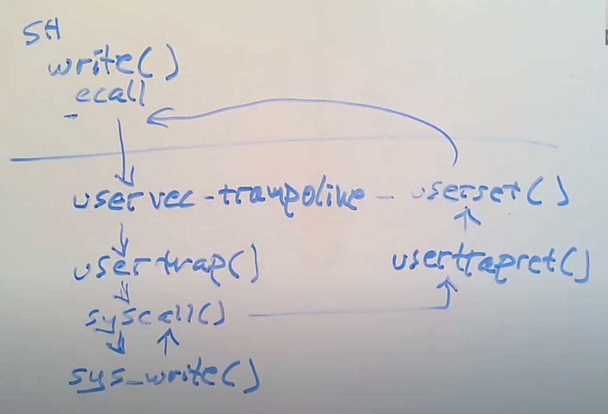

番外篇，探究通过 shell 运行命令时，系统调用到底是个什么流程。
用户层是如何进行系统调用的
以 sleep.c 为例，在 lab0 中我们知道要修改 Makefile 中的
UPROGS 变量，并且 user/user.h 中也为我们提供了
sleep() 的函数声明，但有一件事一直让我们感到疑惑，只不过
lab0 中并没有影响，那就是 sleep() 的定义在哪里？
事实上，Makefile 在构建时，会首先调用
user/usys.pl 脚本文件，其作用是生成一个汇编语言文件
usys.S，这个文件会被解释成
usys.o，最后再和其它 *.o
文件一起链接成内核文件。那么这个脚本具体做了什么事呢？根据阅读我们发现，该文件就是利用
entry() 将用户层的各个函数注册成汇编语言，比如
entry("sleep") 会被注册为：
user/usys.Ssleep: li a7, SYS_sleep ecall ret
user.h中的所有函数都在usys.pl中得到注册，所以它们的实现形式都是一样的。
易得，调用用户层的 sleep() 时，会将
SYS_sleep 加载到寄存器 a7 中，然后调用 ecall
指令进入内核，最后通过 ret 返回用户态。
那么这里有个疑问：这个 SYS_sleep 是个什么东西？在
kernel/syscall.c 中有个叫 syscalls[]
的数组，这就是系统调用表，记载了系统调用号 SYS_xxx
到系统调用函数指针 sys_xxx 的映射，那么
SYS_sleep 对应的就是系统调用 sys_sleep
了。
这些
SYS_xxx的值都在kernel/syscall.h中定义。
ecall 与 uservec
ecall 实际上是一条 CPU 指令，它只做三件事情：
- 切换用户态到内核态；
- 保存用户态程序计数器 PC 到寄存器 SEPC；
- 将 PC 设置成寄存器 STVEC 的值，从而跳转到寄存器 STVEC
中指向的指令，也就是
uservec；
那么 uservec 做了什么事呢？
kernel/trampoline.Suservec: ## swap a0 and sscratch ## so that a0 is TRAPFRAME, and sscratch is user a0 csrrw a0, sscratch, a0 ## save the user registers in TRAPFRAME sd ra, 40(a0) ... sd t6, 280(a0) ## save the user a0 in p->trapframe->a0 csrr t0, sscratch sd t0, 112(a0)
最开始，地址 TRAPFRAME 的值记录在寄存器 SSCRATCH 中，而
trapframe 用于保存所有的 32 个用户寄存器值，而寄存器 a0
存放了第一个参数。uservec
首先交换这两个寄存器的值，这样 a0 就指向 trapframe
了，然后再将所有寄存器依次写入页中。当然，原本的 a0，也就是现在的
SSCRATCH，也需要被保存。
之所以交换，是因为诸如
sd ra 40(a0)这些指令的操作数必须位于用户寄存器，而原本的 32 个用户寄存器都被各自的数据占用，没法存TRAPFRAME，于是就用 SSCRATCH，这个寄存器的作用就是「保存其他寄存器的值」。只要将TRAPFRAME存入其中，通过交换，就可以让TRAPFRAME放到用户寄存器了，从而能够根据 a0 访存，将用户寄存器保存到内存中。当然，别忘了后面还要换回来。
kernel/trampoline.S## restore kernel stack pointer from p->trapframe->kernel_sp ld sp, 8(a0) ## make tp hold the current hartid, from p->trapframe->kernel_hartid ld tp, 32(a0) ## load the address of usertrap(), p->trapframe->kernel_trap ld t0, 16(a0) ## restore kernel page table from p->trapframe->kernel_satp ld t1, 0(a0) csrw satp, t1 ## clear page table cache(TLB) sfence.vma zero, zero
一些内核数据保存在 trapframe 的前面几个变量中，这里将这些变量加载到寄存器中，方便使用。之后将 t1 与 SATP 交换，并清空页表缓存，我们就正式切换到了内核页表。又因为 trampoline 在用户态和内核态都处于同一个虚拟地址，并且映射到同一个物理地址，所以执行不会报错。
原本 SATP 内的用户页表指针不用保存，因为它可以通过
MAKE_SATP(p->pagetable)写回。那么，叫 trampoline page 的原因就很好理解了——某种程度在它上面「弹跳」了一下，然后从用户空间走到了内核空间。
kernel/trampoline.S## a0 is no longer valid, since the kernel page ## table does not specially map p->tf. ## jump to usertrap(), which does not return jr t0
最后就是根据 t0 和内核页表，获取 usertrap()
函数物理地址，跳转过去并执行了。
usertrap() 做了什么
kernel/trap.cvoid usertrap(void) { if((r_sstatus() & SSTATUS_SPP) != 0) panic("usertrap: not from user mode");
首先，检查 SSTATUS 的 SPP 位。该位指明了 CPU 之前的权限，如果为 0，则说明是从用户态来的，那检查通过。
kernel/trap.c// send interrupts and exceptions to kerneltrap(), // since we're now in the kernel. w_stvec((uint64)kernelvec);
通过 w_stvec() 将 kernelvec 写入 STVEC
中。由于已经处于内核态，如果在这里触发中断/异常就转到
kernelvec 去执行。
kernel/trap.cstruct proc *p = myproc(); // save user program counter. p->trapframe->epc = r_sepc();
接着，它获取当前进程 p，并将 SEPC 的值保存在 p->trapframe 的
epc 字段中，这是为了防止切换进程时 SEPC 被覆写。
当前进程的获取需要通过当前 CPU。事实上我们上面已经把 hartid 保存在 tp 中了，这里只需读取编号并从一个叫
cpus的表中获取即可，每个struct cpu内都有一个指针来指向当前进程。
kernel/trap.cif(r_scause() == 8){ // system call if(p->killed) exit(-1); // sepc points to the ecall instruction, // but we want to return to the next instruction. p->trapframe->epc += 4; // an interrupt will change sstatus &c registers, // so don't enable until done with those registers. intr_on(); syscall(); } else if((which_dev = devintr()) != 0){ // ok } else { printf("usertrap(): unexpected scause %p pid=%d\n", r_scause(), p->pid); printf(" sepc=%p stval=%p\n", r_sepc(), r_stval()); p->killed = 1; } if(p->killed) exit(-1); // give up the CPU if this is a timer interrupt. if(which_dev == 2) yield();
（快结束了！）它检查 SCAUSE 寄存器。在 RISC-V
中，一旦出现中断或异常，硬件就会自动设置该寄存器，如果是系统调用，那么会将其设置为
8。 - 如果检查发现这是一个系统调用，就将 trapframe
中保存的用户 PC
增加一个指令字长，这是为了返回时可以直接从系统调用的下一条指令继续执行，然后通过
intr_on() 开中断，最后调用 syscall()
执行系统调用； - 如果是来自设备的中断，并且还是时钟中断，就让出 CPU； -
如果啥也不是，说明出现了某些错误，需要将该进程杀死；
kernel/trap.cusertrapret(); }
最后，调用 usertrapret()
返回用户态；我们需要关注的就是这个 syscall() 函数，它取出
trapframe 下 a7 的值……这个值好熟悉，原来就是之前我们放入的
SYS_xxx。读取这个值后，从系统调用表中找到相应的系统调用函数指针，通过读取
trapframe 中的寄存器获取参数，就可以做事情了。
usertrapret() 做了什么
usertrapret()
做了一些，为了返回用户态，软件层面要做的工作。嗯，其实就是恢复用户态数据到各个寄存器里。
先回想一下哪些数据因为执行 usertrap()
而被保存或覆写了……用户程序计数器 PC、32 个用户寄存器、SATP 寄存器、STVEC
寄存器、SSCRATCH
寄存器……嗯好像就这些，那接下来就需要将原来用户态的数据写回了。
kernel/trap.cvoid usertrapret(void) { struct proc *p = myproc(); // we're about to switch the destination of traps from // kerneltrap() to usertrap(), so turn off interrupts until // we're back in user space, where usertrap() is correct. intr_off();
首先，关闭中断。这是因为接下来要重置
STVEC，而我们仍处于内核态，一旦发生中断/异常，可能会因为
STVEC 的重置而进入错误的处理程序。
kernel/trap.c// send syscalls, interrupts, and exceptions to trampoline.S w_stvec(TRAMPOLINE + (uservec - trampoline));
接着，写回 STVEC。这是因为我们之前将其设为了
kernelvec，现在要返回用户态了，必须切回
uservec。
kernel/trap.c// set up trapframe values that uservec will need when // the process next re-enters the kernel. p->trapframe->kernel_satp = r_satp(); // kernel page table p->trapframe->kernel_sp = p->kstack + PGSIZE; // process's kernel stack p->trapframe->kernel_trap = (uint64)usertrap; p->trapframe->kernel_hartid = r_tp(); // hartid for cpuid()
与此同时，更新 trapframe 的前 5 个字段。其中 kernel_satp
与 kernel_hartid 分别从 satp 与
tp 中读取，而 kernel_sp 被设置为
kstack + PGSIZE 是因为栈大小为一个
PGSIZE，kernel_trap 则是直接被设置为
usertrap 的函数地址。
kernel/trap.c// set up the registers that trampoline.S's sret will use // to get to user space. // set S Previous Privilege mode to User. unsigned long x = r_sstatus(); x &= ~SSTATUS_SPP; // clear SPP to 0 for user mode x |= SSTATUS_SPIE; // enable interrupts in user mode w_sstatus(x); // set S Exception Program Counter to the saved user pc. w_sepc(p->trapframe->epc); // tell trampoline.S the user page table to switch to. uint64 satp = MAKE_SATP(p->pagetable);
还需要设置一些 userret 会用到的寄存器，将 SSTATUS
寄存器的 SPP 位与 SPIE
位——因为要回去了，同时也以便下次能够顺利在用户层执行中断；将 trapframe
中的 epc 字段写回 SEPC，即恢复用户程序计数器；调用
MAKE_SATP 生成一个参数；
kernel/trap.c// jump to trampoline.S at the top of memory, which // switches to the user page table, restores user registers, // and switches to user mode with sret. uint64 fn = TRAMPOLINE + (userret - trampoline); ((void (*)(uint64,uint64))fn)(TRAPFRAME, satp); }
该参数和 TRAPFRAME 一起传给 userret
并执行，相当于把 TRAPFRAME 写入了 a0，把新的 SATP
值写入了 a1；
ret实际调用的也是kernel/trap.c中的usertrapret()函数，做一些用户空间的恢复工作。当然有些事情得硬件处理，即执行名为userret的汇编函数（位于trampoline.S）。
探索 userret
usertrapret()
还有一些无法在软件层面做的事，这些工作统统由 userret
负责。
kernel/trampoline.S.globl userret userret: ## userret(TRAPFRAME, pagetable) ## switch from kernel to user. ## usertrapret() calls here. ## a0: TRAPFRAME, in user page table. ## a1: user page table, for satp. ## switch to the user page table. csrw satp, a1 sfence.vma zero, zero
第一步是切换到用户页表。上面已经讲过，把参数传给 userret
时，新的 SATP 值在 a1 里，那就是要交换 a1 和
SATP。当然别忘了清楚页表缓存。
kernel/trampoline.S## restore all but a0 from TRAPFRAME ld ra, 40(a0) ... ld t6, 280(a0)
接下来，复原所有 32 个用户寄存器。a0 已经在传参时被设为了 trapframe，所以直接用就行。
kernel/trampoline.S## put the saved user a0 in sscratch, so we ## can swap it with our a0 (TRAPFRAME) in the last step. ld t0, 112(a0) csrw sscratch, t0 ## restore user a0, and save TRAPFRAME in sscratch csrrw a0, sscratch, a0
而 SSCRATCH 在之前由于交换，放的值是 user
a0，也就是系统调用传入的第一个实参（见 uservec），并且被保存到了 trapframe->a0
中。尽管 trapframe->a0
在系统调用过程中变成了系统调用函数返回值，但无论如何，现在需要进行逆操作了——先从
trapframe->a0 中将返回值 载入 SSCRATCH，再和实际寄存器 a0
进行交换。于是乎，现在寄存器 a0 和 SSCRATCH
成为了我们想要的模样，前者存返回值，后者存 TRAPFRAME。之后
TRAPFRAME 会一直保存在SSCRATCH中，直到用户程序执行了另一次
trap。
kernel/trampoline.S## return to user mode and user pc. ## usertrapret() set up sstatus and sepc. sret
最后，执行 sret，程序会切换回用户态，寄存器 SEPC
的数值会被拷贝到 PC，并且重新打开中断。因为同一进程的用户 PC 被记录到了
epc 中，直到 usertrapret() 才被写回
SEPC，所以不用担心被修改。
最后总结

总结起来就是，对于任何一个用户层中允许调用的内核函数
func()，首先要在 user/user.h 中声明，还得在
user/usys.pl 中注册，在 kernel/syscall.h
定义新的系统调用号 SYS_func，以及在
kernel/syscall.c 的系统调用表中注册新的条目
SYS_func => sys_func()。当然不能忘了修改
Makefile 的 UPROGS 变量。
当调用 func() 时，会将 SYS_func 载入
a7，然后调用 ecall 指令，进入到 usertrap()
函数中执行 syscall()，取出 a7
的系统调用号，查表得到系统调用 sys_func()
并执行，将返回值存到 a0 寄存器中，最后调用 sret
指令返回。这就是完整流程。